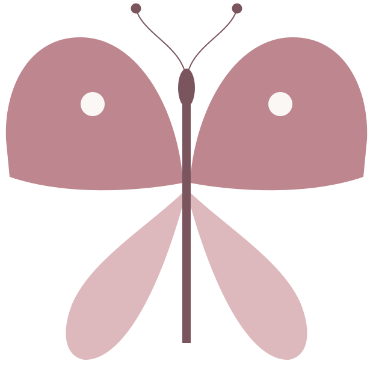

Seelenwende
@_seelenwende
Raus aus toxischen Beziehungen. Zurück zu dir.
Hilfe für Frauen in narzisstischen Beziehungen, vor der Trennung und danach. Von einer Frau, die es 15 Jahre selbst erlebt hat.
Wo stehst du gerade?
Ist meine Beziehung überhaupt toxisch? →
Kostenlos starten
Ist das noch normal?
Welche Glaubenssätze tragen dich?
Sicher gehen
Der Weg nach draußen
Begleitung
 6 Wochen
Wieder bei dir
6 Wochen
Wieder bei dir
 Das Bundle – Zurück zu dir
Das Bundle – Zurück zu dir
 Mira, deine Begleiterin
Mira, deine Begleiterin
 Seelenwende Kreis
Seelenwende Kreis
Mehr
Alle Angebote
Über mich
Seelenwende ist Selbsthilfe und ersetzt keine Therapie.